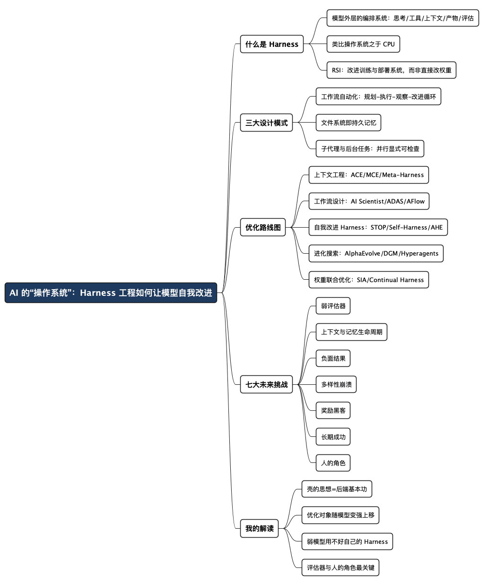

AI 的“操作系统”：Harness 工程如何让模型自我改进
Posted on 五 31 7月 2026 in AI
| Abstract | AI 的“操作系统”：Harness 工程如何让模型自我改进 |
|---|---|
| Authors | Walter Fan |
| Category | learning note |
| Version | v1.0 |
| Updated | 2026-07-31 |
| License | CC-BY-NC-ND 4.0 |
AI 的“操作系统”：Harness 工程如何让模型自我改进
前阵子我在折腾自己的虚拟 Scrum 团队（lazy-scrum-team），把“产品经理”“开发”“测试”这些角色做成一个个 agent 提示词模板。用着用着，我发现自己做的最多的一件事，不是调模型，而是调模型外面的那套东西：提示词怎么组织、工具怎么暴露、上下文怎么存、失败怎么重试、结果怎么评估。
我当时的直觉是：这层“壳”比模型本身更值得花时间。读完 Lilian Weng 这篇《Harness Engineering for Self-Improvement》（2026 年 7 月 4 日），我确认了自己的直觉——而且她比我走得远得多：这层壳不但重要，而且终将学会自己改自己，让 AI 走上递归自我改进（RSI）的路径。
这篇博客分两半：前半部分是我对原文的完整翻译与整理，后半部分是我的解读——一个后端老兵怎么看“Harness 工程”。
- 先把词说清楚：Harness（框架/外壳/缰绳）指包裹在基础模型外面、编排它如何思考、调用工具、管理上下文、存储产物、评估结果的整套系统。
- 这篇不是纯翻译：原文 31 分钟阅读量，我把它压缩成可消化的结构，并保留了所有关键论文和数字。
- 原文链接：https://lilianweng.github.io/posts/2026-07-04-harness/，建议直接读原文配图。
一、什么是 Harness：模型外面那层“操作系统”
递归自我改进（recursive self-improvement, RSI）的概念可以追溯到 I. J. Good（1965）提出的“超级智能机器”：一个能在所有智力活动中超越人类、并能设计出更好机器来改进自身的系统。Yudkowsky（2008）把“递归自我改进”定义为一个具体的反馈回路：AI 用当前的智能，去改进生产它智能的认知机器。
在现代 AI 里，这个回路未必是模型直接改写自己的权重——更广泛地说，是模型改进自己的训练流水线和部署系统，从而让下一代模型在经济上有价值的任务上表现更好。Lilian 特别强调“部署系统”这个词，因为原始模型和真实世界之间的那一层，和模型本身的原始智能（预训练后的评测分数）一样重要。Claude Code、Codex 这些成功产品，就是最好的证据。
Harness 是围绕基础模型的系统，它编排执行，决定模型如何思考、规划、调用工具、感知和管理上下文、存储产物、评估结果。 它不再只是提示词模板，而更接近运行时和软件系统设计。
作者还点出一个漂亮的类比：Harness 之于模型，就像操作系统之于 CPU。 操作系统把复杂逻辑封装起来，对外只留简单接口；Harness 也一样，把模型怎么观察、怎么行动、怎么记忆、怎么自检、怎么改进封装成简单接口。她也预言：配置、工具接口、协议会像 TCP/IP 一样逐渐行业标准化。
二、三大设计模式
Pattern 1：工作流自动化
给模型定义一个可以操作、测试、迭代的工作流，是自动化的关键设计。Karpathy 的 autoresearch 仓库 是个干净的范例。常见工作流是目标导向的循环：
规划 → 执行 → 观察/测试 → 改进 → 再执行，直到目标达成。
过程中模型可以主动向用户请求澄清任务说明或执行偏好。关键点是：工作流图强调模型分析自己的轨迹和失败案例，通过“agent 运行时”迭代进步，而不是靠一个静态的提示词模板。
Pattern 2：文件系统即持久记忆
长时程（long-horizon）agent 系统里反复出现的模式是：对丰富状态和产物的简单控制。Harness 不应该把整个工作流和所有日志都塞进上下文，而应该把持久状态放在文件里。
原因很实在：在长时程 agent 任务中，实验日志、代码 diff、论文摘要、错误栈、过去的轨迹，常常比模型的上下文窗口还长。而“用 bash 读写编辑文件系统”恰恰是 LLM 的基础技能——用文件当持久记忆，天然受益于核心模型能力的进步。
Pattern 3：子代理与后台任务
Harness 可以派生多个子代理并行执行、监控后台任务。当主代理需要同时搜索多个假设、并发跑实验、或者把隔离的子任务委托出去而不污染主上下文时，这招很有用。
父代理需要一个小的进程管理器：启动任务、查看日志、取消失败的运行、把结果合并回主线程。关键设计决策是让并行显式、可检查。 如果子代理的输出只活在临时的聊天上下文里，它们很快就过时、看不见了；如果存成文件、日志、状态记录，模型就能在中断后恢复，并能推理自己的执行历史。
一句话总结三大模式：定义好循环，把状态落盘，让并行可见。 这哪是 AI 技巧，这就是我们做后端服务的基本功。
三、案例：编码 Agent 的 Harness
主流的 Claude Code、Codex、OpenCode、Cursor 类编码 Agent，核心接口已经趋于稳定，工具大致分这几组：
| 工具组 | 典型工具 |
|---|---|
| 文件系统 | 发现：glob/grep/ls；读取：read/read_many；修改：write/edit/multi_edit/apply_patch |
| Shell 执行 | bash、PowerShell |
| IDE/仓库集成 | lsp、git_status/git_diff/git_commit |
| 外部上下文 | MCP 工具、Skills |
| 联网搜索 | web_search/web_fetch/browser 工具 |
| 产物 | 读文档、读图、生成 HTML/图片 |
| 后台进程 | 如 CronCreate/CronDelete/CronList |
| Agent 委派 | 如 spawn_agent/resume_agent/wait_agent/interrupt_agent 等 |
看到这张表我挺有共鸣：这不就是给我们这些后端老开发用的 IDE + 终端 + 调度系统吗？只不过操作者是模型。
四、Harness 层 vs 核心智能：作者的预测
Lilian 对近期的 RSI 路径做了一个明确预测：近期的自我改进不会从“模型直接改写自己权重”开始。
我的预测是：Harness 工程将朝着“元方法论”的方向进化——改进的是“获得更好答案的机器”，而不只是答案本身。 Harness 系统本身成为优化目标，启发式规则越来越少，通用机制越来越多。
成熟后的因果链是：成熟的 Harness 让自动研究（auto-research）跑通模型自我改进的循环 → 更聪明的模型反过来防止 Harness 过度工程化，让系统可持续。长远看，很多 Harness 改进会内化进核心模型行为，但与外部上下文和工具的接口应该保留。
她举了个我们已经见过的先例：提示词工程。当年那些手工提示词技巧，随着指令微调和模型推理能力变强而不再重要，但指定目标、约束、上下文、评估这件事从未消失。
五、优化路线图：从提示词到优化器代码
Harness 系统里被优化的对象，大致沿这条线演进：
指令提示词 → 结构化上下文 → 工作流 → Harness 代码 → 优化器代码
模型越聪明，我们越敢把更复杂的对象交给它优化。分五块展开。
1. 上下文工程（Context Engineering）
简单地把所有工具响应和模型输出都追加进上下文，任务一长就会失控。上下文管理是构造更结构化、更精简上下文的层，同时管理持久状态。
ACE（Agentic Context Engineering，Zhang et al. 2025） 把上下文当作一本不断演化的“行动手册”（playbook），而不是越来越长的提示词。三个组件维护一本由带标识符的要点组成的上下文手册： - Generator（生成器）：参照手册要点，产生任务轨迹 - Reflector（反思器）：从成功和失败轨迹中提炼洞见 - Curator（策展人）：用增量、条目化的方式更新结构化上下文
关键设计：策展人不重写整块提示词，而是输出一组 (标识符, 描述) 的结构化要点，用确定性逻辑合并进上下文手册，定期去重精炼。这防止了“上下文崩溃”和“简洁性偏差”。
MCE（Meta Context Engineering，Ye et al. 2026） 再进一步：把“怎么管理上下文”的机制和“上下文里装什么”的内容分离，在元层做技能进化、在基层做上下文优化。技能 s 定义了一个上下文函数：静态组件（提示词、知识库、代码库）+ 动态算子（搜索、选择、过滤、格式化），形成双层优化——内层在训练集上找给定技能下的最优上下文，外层在验证集上找最优技能。
Meta-Harness（Lee et al. 2026） 又深一层：被优化的对象变成“决定该存什么、取什么、给模型看什么”的代码。名字里的 “Meta” 意思是它是用来优化 Harness 的 Harness。提议者本身就是一个编码 agent，输出是帕累托前沿上的一批 Harness 候选；整个执行历史都在文件系统里，编码 agent 用 grep/cat 去读，而不是把所有东西塞进一个提示词。
核心教训：一旦 Harness 设计变成可执行的搜索空间，一个强大的编码 agent 就能利用人类工程师使用的同一个设计空间。
2. 工作流设计（Workflow Design）
工作流可以由领域专家手工设计。以自动研究为例，已经有很多框架：
- AI Scientist（Lu et al. 2026）：流水线覆盖提出想法 → 写代码 → 跑实验 → 分析结果 → 写论文 → 同行评审。
- ScientistOne（Meng et al. 2026）：把“可验证性”作为中心设计约束，每个论断（引用、数字、方法、结论）都必须能追溯到证据源，用 Chain-of-Evidence（证据链）检查审计。
- Autodata（Kulikov et al. 2026）：一个数据科学家 agent，管理“挑战者”（出题）+“弱求解器”+“强求解器”+“验证器/裁判”，目标是合成“难度恰到好处”的数据——强求解器能过、弱求解器过不了。局限是：合成任务只用来微调弱求解器，如果循环不能迭代改进强模型，就有点像对生成提示词分布的间接蒸馏，RSI 味道不足。
既然工作流的设计空间巨大，自然可以把工作流设计本身当成搜索问题。两条代表路线：
- ADAS（Automated Design of Agentic Systems，Hu et al. 2025）：把 agent 设计本身形式化为优化问题——“元 agent 搜索”。先用 CoT、self-refine 这类简单 agent 初始化档案库，然后让元 agent 全部用代码编程新 agent（受档案库现有方案启发），先产生高层描述再实现成代码，经过两轮 self-refine（自反思：让模型给反馈，再让同一模型根据反馈改进输出），评估新候选，成功的加回档案库，迭代到最大轮数。
- AFlow（Zhang et al. 2025）：把 agentic 工作流表示成图——节点是调用 LLM 的动作，边是用代码实现的逻辑操作。优化靠蒙特卡洛树搜索（MCTS）：从模板初始化起始工作流，用“分数 + 均匀探索”的软混合选节点，让 LLM 基于评估表现产出修改版，执行评估，有改进就加回树，直到 top-k 平均分持平或预算耗尽。在 QA、代码、数学任务上，AFlow 明显超过手工工作流和 ADAS。
3. 自我改进的 Harness（Self-Improving Harness）
上下文工程和工作流设计都只是 Harness 的一部分。要把上下文管理逻辑、工作流、权限、其他组件放在一起整体优化，就需要代码作为通用语言——Harness 本质上是“用代码编程提示词、工具调用、子代理、控制流、记忆和工作流逻辑如何协同”。如果 LLM 能优化执行 agent 的代码，它能触及的设计空间远大于手写提示词。
STOP（Self-Taught Optimizer，Zelikman et al. 2023） 是递归脚手架改进的早期例子。目标不是直接改进解 s，而是改进改进器 I 本身：先用元效用（meta-utility，一个改进器在多个下游任务上的平均效用）度量 I，然后递归地让 I 自己改进自己。实验里，改进后的改进器发现了遗传算法、分解并改进部分、多臂提示词老虎机、模拟退火、变温、束/树搜索等策略。
一个重要警示：STOP 用 GPT-4 能逐轮提升平均下游表现，用 GPT-3.5 和 Mixtral 这类弱模型反而退化。递归结构本身不够，基础模型必须有足够能力去改进机制。 Harness 改进让模型部署得更好，但智能仍然是核心。
Lin et al.（2026）更细致地解耦了两个轴：harness-updating（产生有用 Harness 编辑的能力）和 harness-benefit（利用更新后 Harness 提升任务解决的能力）。有意思的是，从 Qwen3.5-9B 到 Claude Opus 4.6 一大票不同规模、不同核心智能的模型，harness-updating 能力差不多——9B 的提议器能写出与 Opus 程序同构的技能；而 harness-benefit 是非单调的，中档模型受益最大。
Self-Harness（Zhang et al. 2026） 用“提出-评估-接受”循环让 LLM agent 改进自己的 Harness，三阶段： 1. 弱点挖掘：把失败聚类成“验证器可证实的失败模式”。注意表面上两次运行可能是同一个验证器结果（如超时、缺产物），但因果机制不同，所以失败记录要包含终端验证器级原因、相关 agent 行为的因果状态、轨迹暴露的抽象机制。 2. 有界 Harness 提议：同一模型作为提议器，给它有界的提议上下文——当前 Harness 的可编辑面、验证器可证实的失败模式、应保留的通过行为记录、先前尝试过的编辑摘要。编辑应优先处理可寻址的复发错误模式（不是任务本身的难度），用窄改动解决。 3. 提议验证：在保留集上跑回归测试（held-in 检查弱点是否解决，held-out 检查有没有引入新问题），两边都不回归才接受合并。
作者在这里明确表达了担忧：如果允许程序编辑 OS 系统，抽象边界就被打破了。可编辑面必须精心设计，权限控制和安全层必须放在这个循环之外。 奖励黑客（reward hacking）的所有挑战依然存在。
AHE（Agentic Harness Engineering，Lin et al. 2026） 认为 Harness 进化的瓶颈在可观测性——一次 rollout 失败时，必须知道是哪个组件干的，每次编辑都要有证据支撑。框架用三根可观测性支柱形成闭环： - 组件可观测性：每个可编辑组件在文件系统里都有表示，动作空间显式可追踪。Harness 有 7 个组件：系统提示词、工具描述、工具实现、中间件、技能、子代理配置、长期记忆。每个失败模式映射到一个组件，编辑更有针对性。 - 经验可观测性：把大量原始轨迹分析汇总成证据和失败模式的分层结构。每个 Harness 生成 k 条轨迹，用“Agent debugger”逐文件分析，生成每个任务的成功/失败根因报告，再聚合成基准总览，原始轨迹按需访问——分层访问更省 token。 - 决策可观测性：每次编辑都配一个对下一轮的预测来验证。“Evolve agent”读仓库、决定改哪个组件，然后产出编辑和理由。每个编辑都是文件级的可证伪声明，下一轮验证。两条约束：编辑只作用于 Harness 工作区（runs 目录、tracer、验证器、LLM 配置只读，禁用一类奖励黑客如关验证器、换模型、加推理预算）；编辑必须证据驱动，带“宣言条目”（失败证据名、推断的根因、目标修复、预期影响含预期修复和风险回归）。
结果：在 Terminal-Bench-2 上，AHE 超过了人类设计的 Harness（OpenCode、Terminus-2、Codex）除 Hard 档以外的全部；同一个冻结的 Harness 不继续进化就迁移到 SWE-bench-verified，说明进化出的 Harness 把工程经验编码进了组件，而不是针对特定基准做优化。
4. 进化搜索（Evolutionary Search）
进化搜索是受自然选择启发的优化方法：变异一批解，只留下适应度高的。适用于（1）搜索空间大或形状怪异；（2）难以用梯度直接优化、但容易评估解。Harness 搜索正好合适。
- Promptbreeder（Fernando et al. 2023）：用丰富的变异算子优化任务特定提示词，有意思的是变异提示词本身（指示 LLM 变异任务提示词的指令）也通过进化改进。
- GEPA（Agrawal et al. 2025）：反思式提示 + 进化搜索，用自然语言反思试错轨迹来提议提示词更新。
- AlphaEvolve（Novikov et al. 2025）：编码 agent 进化搜索系统，维护候选程序池，冻结 LLM 只负责生成改进 diff。设计细节：提示词包含父程序、结果、指令、元信息；编码 agent 能访问整个仓库，但可改进区域用
# EVOLVE-BLOCK-START/# EVOLVE-BLOCK-END显式标记；元提示词与指令、上下文共同进化。 - ThetaEvolve（Wang et al. 2025）：进化 + 强化学习 + 上下文学习组合；DemoEvolve（Che et al. 2026） 用人类专家演示给自我 rollout 档案库补充参考经验；ShinkaEvolve（Lange et al. 2025） 提出三个组件提升 LLM 采样效率：按性能排名和后代数平衡的父代采样、基于嵌入余弦相似度的代码新颖性拒绝采样（丢掉和现有种群太像的候选）、在元草稿本里识别成功解的好模式指导后续变异。
- Darwin Gödel Machine（DGM，Zhang et al. 2025）：明确针对“可编辑 Harness 代码仓库”的进化——agent 被允许修改自己的 Harness。后代选择按“性能成比例、子代数反比例”的概率挑父代，用 bash + editor 两个基本工具改代码，评估后高绩效者才回池。实验用 Claude 3.5 Sonnet 做基础模型，DGM 发现的 agent 在 SWE-bench Verified（20%→50%）和 Polyglot（14.2%→30.7%）上媲美或超过手工 agent。
- Hyperagents（Zhang et al. 2026）：引入元 agent 控制“如何修改现有任务 agent 来创造新 agent”。
这类方法的适用边界很清楚：适合候选解能自动评估、适应度容易量化的领域（矩阵乘法、GPU kernel 优化、算法竞赛、数据中心调度）；在评估慢、模糊、主要靠启发式的领域就挣扎。计算效率和进化有效性也是顾虑。
5. 与模型权重的联合优化（Joint Optimization with Model Weights）
Harness 进化改变的是模型周围的非参数系统。要实现完整自我改进，可以让模型同时更新自己的权重（通过改进训练流水线或测试时持续学习）。
SIA（Hebbar et al. 2026） 是早期尝试，把 Harness 改进和模型参数更新放进同一个优化循环，三个组件：Meta-Agent（提议初始 Harness）、Task-Specific Agent（执行任务）、Feedback-Agent（基于近期轨迹决定下一轮是更新 Harness 还是更新权重）。作者自己都承认实验有混杂因素（任务 agent 远弱于元 agent 和反馈 agent 用的模型，基线太弱），方向有趣，证据是临时的。训练稳定性、Goodhart 效应等挑战仍然开放。
Continual Harness（Karten et al. 2026） 在长时程游戏场景里做 Harness 更新 + 通过蒸馏强教师模型在低奖励轨迹上的标签来联合学习策略模型。
六、未来挑战：七大瓶颈
AI Scientist 系列工作证明：专家设计的 Harness 能协调自动研究循环的很大一部分。 但写论文不等于科学发现——系统可以写出貌似合理的稿件，却带着编造的引用、实现漂移、虚弱的实验结果。Trehan & Chopra（2026）用最小脚手架 + 基础工具（read_file/write_file/llm_search/list_files）测试 LLM 从研究想法到论文，在三个领域（世界模型、多智能体 RL、AI 安全与对齐）各备 45-50 份高质量种子文档，人类专家只选了 4 个想法跑完整流水线，只有 1 个完整执行成论文。他们观察到六个反复出现的失败模式：
- 偏向训练数据默认：用旧库、过时命令、标准格式，或基于不扎根于实际仓库/数据集的前提假设。
- 执行压力下的实现漂移：实现变复杂时，模型滑向常见的更简单方案，而不是提出的方法。
- 记忆和上下文退化：长时程项目丢掉关键细节，除非日志写成持久产物。
- 过度乐观：实验有噪声甚至失败也宣布成功——Bubeck et al.（2025）观察到的“p-hacking 和 eureka-ing”模式：模型加“数值胶带”就宣布胜利。
- 领域智能不足：缺少隐性手艺知识，比如预判实现复杂度、判断实验结果是否合理、知道哪些基线重要。
- 科学品味弱：实验能跑，但没回答对的问题。
通向完整 RSI 的七个瓶颈：
- 弱而模糊的评估器：很多研究论断没有又快又准的验证器，现实任务也一样。现有自我改进循环在评估指标可测量、客观的任务上效果最好（和 RL 一样）。研究品味、新颖性、长期科学价值难测得多——研究品味混杂了问题定义、实验设计、判断哪些意外结果值得追、哪些失败值得重试。
- 上下文和记忆的生命周期：agent 越自主，记忆越膨胀。好 Harness 要管理上下文和记忆来弥补长上下文生成的局限。作者类比人类终生记忆：上下文工程应该也会成为智能的核心部分，而不是停留在软件系统层。
- 负面结果：研究者有动力发成功结果，文献偏向成功。LLM 训练数据大部分是人类造的（作者原话：at least for now, lol），成功/失败样本失衡，可能不擅长判断何时放弃假设、报告负面结果、承认失败。研究 Harness 应该让失败尝试容易保存——从失败中学习是裁剪任务搜索空间的最好方法。
- 多样性崩溃：进化和 RL 循环倾向于剥削已知高奖励模式，需要机制防止种群坍缩成同一解的各种变体。对开放式研究尤其关键——最好的路径在当下评估器下可能一开始看着更差。
- 奖励黑客：自我改进循环优化它被给予的任何信号。奖励来自单元测试就过拟合测试，来自裁判模型就学针对该裁判的 hack，来自基准分就利用基准伪影。评估器和权限控制应该放在进化 Harness 的循环之外，用保留测试、轨迹审计、在关键决策点的人工审查。监督能多大程度规模化、自动化，仍是开放研究问题。
- 长期成功：外在优化循环作用于我们能在训练沙箱里模拟的个体 rollout 之外的奖励。以编码 agent 为例：它们已提升软件工程日常生产力，但很多优化目标太短期——能完成手头任务，却看不出如何保护一个由成百上千工程师共同维护的仓库的长期健康。沙箱式 RLVR 训练很少覆盖可维护性、所有权边界、迁移成本、向后兼容、未来调试负担。
- 人的角色：人应该往栈的上层走，而不是被移出循环——在正确的时间、正确的抽象层级提供监督，系统设计要考虑何时、如何设置这样的人机触点。很多上面列出的挑战需要人的反馈和方向盘。毕竟，我们是在为人类更美好的未来建设技术，而不是反过来。
七、附录：几个有用的基准
| 基准 | 测什么 | 人类/最佳表现 |
|---|---|---|
| PaperBench | 从零复现 20 篇 ICML 2024 Spotlight/Oral 论文（8,316 条 rubric） | 当时最强 Claude 3.5 Sonnet 约 21%，不及 ML 博士 |
| CORE-Bench | 90 篇论文（计算机、社科、医学）的计算可复现性，270 个任务 | 最强 agent（GPT-4o）在最难任务上仅 21% |
| ScienceAgentBench | 44 篇论文、4 学科（数学/化学/生物/地理）的 102 个数据科学任务 | — |
| RE-Bench | 7 个开放 ML 研究工程环境（≤8 张 H100），61 位人类专家 71 次 8 小时尝试 | 人类 82% 尝试得分非零；AI 在 2 小时预算下比人类高 4 倍，但人类在 8/32 小时预算下反超 |
| MLE-bench | 75 个 Kaggle 离线 ML 工程竞赛 | o1-preview + AIDE 脚手架在 16.9% 竞赛达铜牌级 |
| KernelBench | 250 个 PyTorch 任务，评估 GPU kernel 的正确性和速度 | 指标 fast_p = 正确且快于基线的 kernel 百分比 |
八、我的解读：老后端看 Harness 工程
翻译完，说点我自己的感想。有四个点特别戳我。
第一，这层“壳”我们早就熟，只是没人给它起名。 我做后端二十年，天天在跟“壳”打交道：WebRTC 的信令服务器之于音视频 SDK，微服务网关之于业务服务，OS 之于 CPU。Harness 就是把同一套思想搬到 LLM 身上——封装复杂性，暴露简单接口，管理状态生命周期，把失败变成可观测、可恢复的事件。Lilian 说的“把状态落盘、让并行显式”，就是我们做分布式系统时说的“状态外置、幂等重试、日志先行”。这套知识从没失效，只是换了个主子。
第二，优化对象一步步上移，是模型变强后的必然。 提示词 → 上下文 → 工作流 → Harness 代码 → 优化器代码，这条线和我做自动化运维的路径一模一样：先是写死脚本，然后是模板，然后是配置化，然后是元编程——最后发现真正值钱的是“能自己改配置的程序”。ADAS 让元 agent 用代码编程新 agent、STOP 改进改进器本身，本质都是把“写代码的能力”从人手里交还给程序。这让我想起自己折腾 lazy-scrum-team 的体会：最开始我手写每个角色的提示词，后来我想让父 agent 自动生成子 agent 的提示词——那不就是最朴素的“harness 优化 harness”吗？
第三，最扎心的发现是：弱模型用不好自己的 Harness。 STOP 在 GPT-3.5 上退化，Lin et al. 发现 9B 模型能写出和 Opus 程序同构的技能但用不好它——这直接呼应我另一个项目（async-pkb-book 里评估 AI 辅助写作效率）的观察：工具的价值上限，取决于使用者的能力下限。这提醒我们别迷信“套个壳就起飞”：Harness 放大的是模型已有的能力，而不是凭空创造能力。 对我们这些用 API 的开发者，选模型时“中档模型 + 好 Harness 收益最大”这个发现也值得记一笔——性价比的甜区可能不在最贵的模型。
第四，挑战清单里我最认同“评估器”和“人的角色”两条。 我做服务负责人多年，深知线上事故里最难的不是修，而是“判断这是不是事故”。奖励黑客、过度乐观、p-hacking，本质上都是评估信号被游戏化——这跟绩效考核被刷数据、KPI 被钻空子一模一样。Lilian 说评估器和权限控制要放在进化循环之外，就是“裁判不能由运动员自己当”的工程化表达。而“人往栈的上层走”，我理解是：我们不会失业，但必须从写代码的人，变成定义“什么值得做、什么算做好”的人。
一句话总结我的收获：
AI 的下一个战场不在模型参数里，而在模型外面那层壳里；而这层壳最终要学着改自己——我们这些造壳的人，要先学会给壳留好“可编辑面”和“不可触碰的边界”。
如果你想跟进这个话题，建议按这个顺序读原文：先读“Harness 层 vs 核心智能”那节（作者的判断），再读 AHE（最有工程味道的框架），最后看七个挑战（最接近现实）。
全文思维导图
@startmindmap
<style>
mindmapDiagram {
node {
BackgroundColor #F8F9FA
RoundCorner 10
Padding 10
FontSize 13
}
:depth(0) {
BackgroundColor #1E3A5F
FontColor white
FontSize 18
FontStyle bold
}
:depth(1) {
FontSize 15
FontStyle bold
}
:depth(2) {
FontSize 13
}
}
</style>
* AI 的“操作系统”：Harness 工程如何让模型自我改进
** 什么是 Harness
*** 模型外层的编排系统：思考/工具/上下文/产物/评估
*** 类比操作系统之于 CPU
*** RSI：改进训练与部署系统，而非直接改权重
** 三大设计模式
*** 工作流自动化：规划-执行-观察-改进循环
*** 文件系统即持久记忆
*** 子代理与后台任务：并行显式可检查
** 优化路线图
*** 上下文工程：ACE/MCE/Meta-Harness
*** 工作流设计：AI Scientist/ADAS/AFlow
*** 自我改进 Harness：STOP/Self-Harness/AHE
*** 进化搜索：AlphaEvolve/DGM/Hyperagents
*** 权重联合优化：SIA/Continual Harness
** 七大未来挑战
*** 弱评估器
*** 上下文与记忆生命周期
*** 负面结果
*** 多样性崩溃
*** 奖励黑客
*** 长期成功
*** 人的角色
** 我的解读
*** 壳的思想=后端基本功
*** 优化对象随模型变强上移
*** 弱模型用不好自己的 Harness
*** 评估器与人的角色最关键
@endmindmap

本作品采用知识共享署名-非商业性使用-禁止演绎 4.0 国际许可协议进行许可。 欢迎在我的个人网站 https://www.fanyamin.com 访问原文并评论。